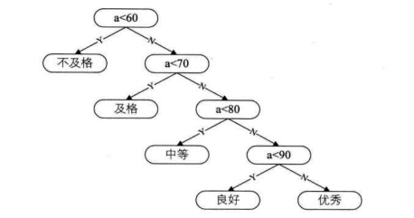
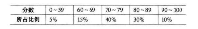

哈夫曼树的由来
在教育改革的今天,已经很少看到明确的分数了,通常是分级来进行表示,如下图:

在进行判断的时候基本都能顺手拈来:
看起来十分简洁明了,但是这里并没有考虑到班级学生成绩的分布情况.如下图

数据中可以看出,70-89两个级别的人数占了全部人数的70%,但是在判断时统统要从60,70开始判断,这就是无形中的浪费.
哈夫曼树的定义及原理
将上面的图简化下,方便对比,左侧常规方式,右侧哈夫曼树.

从树中一个结点到另一个结点之间的分支构成两个结点之间的路径,路径上的分支数目称作路径长度
如上图二叉树a 根节点到C的路径长度就是3,二叉树b中根节点到d的路径长度就是2.
树的长度就是从树根到没一个结点的路径长度之和
上图二叉树a根节到各个结点的长度为1+2+3+4+4 = 14;而二叉树b 3+3+2+2+2 = 12,咋一看相差不多,但是还要算上权(也可以理解为所占百分比,或所占分量).
例如a结点不及格仅占5%,就看做权为5,算上权再来计算:
二叉树a:1*5 + 2*15 + 3*40 + 4*30 + 4*10 = 315
二叉树b:3*5 + 3*15 + 2*40 + 2*30 + 2*10 = 220
这里就可以看出第一种方式比第二种方式多了快50%.
我们把权值成为W,把路径长度看为L就有公式 WPL = (W1*L1 + W2*L2 + … + Wn*Ln).
带权路径长度(WPL)最小的二叉树成为哈夫曼树
内容引自大话数据结构